Getting Started with OlinkViz
OlinkViz Authors
2026-11-16
Source:vignettes/OlinkViz.Rmd
OlinkViz.RmdOverview
OlinkViz provides ready-made, publication-quality visualization functions tailored to Olink NPX proteomics data. It bundles 11 curated datasets from published studies and includes an interactive Shiny application for data exploration.
Installation
# From source:
install.packages("OlinkViz_0.1.0.tar.gz", repos = NULL, type = "source")
# Or with devtools:
# devtools::install("path/to/OlinkViz")Bundled Datasets
| Dataset | Study | Rows | Cols | Description |
|---|---|---|---|---|
iris_longcovid |
IRIS — 10.5281/zenodo.13363117 | 16,020 | 7 | Long COVID NPX data (7 time points) |
pcnsl_olink |
PCNSL — 10.5281/zenodo.20815686 | 172 | 1,010 | Primary CNS lymphoma (wide) |
beatmg_npx |
BeatMG — 10.1212/WNL.0000000000013121 | 112,176 | 19 | Myasthenia Gravis NPX (long) |
beatmg_demo |
BeatMG — 10.1212/WNL.0000000000013121 | 52 | 42 | MG demographics |
beatmg_npx_merged |
BeatMG — 10.1212/WNL.0000000000013121 | 112,176 | 60 | MG NPX + demographics merged |
bansal_baseline57 |
Bansal — 10.1038/s43856-026-01541-6 | 10,374 | 24 | Long COVID baseline (182 proteins) |
bansal_univariate |
Bansal — 10.1038/s43856-026-01541-6 | 182 | 14 | Per-protein Wilcoxon test results |
bansal_longitudinal |
Bansal — 10.1038/s43856-026-01541-6 | 18,294 | 24 | Long COVID paired longitudinal |
qinfeng_npx |
Song 2025 — 10.1007/s00011-025-02020-9 | 66 | 97 | Tuberculosis biomarkers (wide) |
tofa_data |
TOFA — 10.7554/elife.99323 | 453,684 | 16 | Down Syndrome NPX (long) |
tofa_dictionary |
TOFA — 10.7554/elife.99323 | 15 | 3 | TOFA variable descriptions |
probc |
NUMAB project B (simulated) | 35,328 | 22 | Simulated 2-group longitudinal NPX |
Quick Start
Inspecting a Dataset
Each dataset can be examined directly. Let’s look at the IRIS Long COVID data:
str(iris_longcovid)
#> Classes 'data.table' and 'data.frame': 16020 obs. of 7 variables:
#> $ Assay : chr "IL8" "IL8" "IL8" "IL8" ...
#> $ NPX : num 5.22 5.82 5.14 5.17 5.18 ...
#> $ Sex : Factor w/ 2 levels "Female","Male": 2 1 1 2 2 1 1 2 2 2 ...
#> $ IRIS_number : int 10 58 74 18 17 39 28 71 3 48 ...
#> $ Panel : chr "Olink Inflammation" "Olink Inflammation" "Olink Inflammation" "Olink Inflammation" ...
#> $ long_covid : Factor w/ 2 levels "No","Yes": 1 1 2 2 2 2 2 1 2 2 ...
#> $ timing_month: chr "3 months" "3 months" "3 months" "3 months" ...
#> - attr(*, ".internal.selfref")=<pointer: (nil)>
# Groups and time points available
table(iris_longcovid$long_covid, iris_longcovid$timing_month)
#>
#> 12 months 3 months Acute
#> No 1980 1620 1080
#> Yes 2160 6480 2700The OlinkExperiment Object
OlinkViz 0.1.2 introduces the OlinkExperiment S4 class,
a container for Olink proteomics data modeled on Bioconductor’s SingleCellExperiment.
Rows are proteins, columns are
samples; different quantifications (NPX, LOD, protein
counts) live in the assays slot, protein annotation in
rowData, sample annotation in colData, and
dimensionality reductions in reducedDims.
library(SummarizedExperiment) # for colData(), rowData(), as()Build from raw long-format data
oe_from_long() builds an OlinkExperiment
from a long NPX table (one row per assay per sample). Assay/value/sample
columns are auto-detected; the remaining columns are split into
rowData (per-protein) and colData
(per-sample); an optional LOD column becomes a parallel
assay.
oe <- oe_from_long(iris_longcovid)
oe
#> class: OlinkExperiment
#> dim: 180 45
#> metadata(0):
#> assays(1): NPX
#> rownames(180): IL8 VEGFA ... ITGB6 BTN3A2
#> rowData names(2): Assay Panel
#> colnames(45): 10 58 ... 6 7
#> colData names(4): IRIS_number Sex long_covid timing_month
#> reducedDimNames(0):Build from a wide NPX matrix
Use the base OlinkExperiment() constructor directly:
# A long table that includes LOD values
oe <- oe_from_long(beatmg_npx[beatmg_npx$Timepoint == 1, ])
oe2 <- OlinkExperiment(
assays = list(NPX = npx(oe), LOD = lod(oe)),
colData = colData(oe),
rowData = rowData(oe)
)
oe2
#> class: OlinkExperiment
#> dim: 730 49
#> metadata(0):
#> assays(2): NPX LOD
#> rownames(730): IL2 IL10RA ... SERPINC1 CFH
#> rowData names(11): Assay Timepoint ... Normalization ExploreVersion
#> colnames(49): 5458 5484 ... 2757 6487
#> colData names(6): SampleID SubjectID ... PlateID Assay_Warning
#> reducedDimNames(0):Accessors
npx() and lod() mirror the named-assay
accessors of SingleCellExperiment (like
counts()/logcounts()):
dim(npx(oe2)) # NPX assay, proteins x samples
#> [1] 730 49
dim(lod(oe2)) # LOD assay, parallel to NPX
#> [1] 730 49
head(colData(oe2))
#> DataFrame with 6 rows and 6 columns
#> SampleID SubjectID PID Index PlateID Assay_Warning
#> <integer> <character> <character> <integer> <character> <character>
#> 5458 5458 5458_1 1001_1 1 Q-05705_SS230103 PASS
#> 5484 5484 5484_1 1012_1 4 Q-05705_SS230103 PASS
#> 6711 6711 6711_1 1025_1 8 Q-05705_SS230103 PASS
#> 6592 6592 6592_1 1035_1 11 Q-05705_SS230103 PASS
#> 5827 5827 5827_1 1004_1 14 Q-05705_SS230103 PASS
#> 4148 4148 4148_1 1015_1 17 Q-05705_SS230103 PASS
head(rowData(oe2))
#> DataFrame with 6 rows and 11 columns
#> Assay Timepoint Sample_Type OlinkID UniProt MissingFreq
#> <character> <integer> <character> <character> <character> <numeric>
#> IL2 IL2 1 SAMPLE OID20419 P60568 0.2297
#> IL10RA IL10RA 1 SAMPLE OID20420 Q13651 0.0068
#> PAPPA PAPPA 1 SAMPLE OID20421 Q13219 0.0000
#> IL20RA IL20RA 1 SAMPLE OID20422 Q9UHF4 0.0203
#> EIF5A EIF5A 1 SAMPLE OID20423 P63241 0.2905
#> JUN JUN 1 SAMPLE OID20424 P05412 0.0068
#> Panel Panel_Lot_Nr QC_Warning Normalization ExploreVersion
#> <character> <character> <character> <character> <character>
#> IL2 Inflammation E50005 PASS Intensity 3.0.5
#> IL10RA Inflammation E50005 PASS Intensity 3.0.5
#> PAPPA Inflammation E50005 PASS Intensity 3.0.5
#> IL20RA Inflammation E50005 PASS Intensity 3.0.5
#> EIF5A Inflammation E50005 PASS Intensity 3.0.5
#> JUN Inflammation E50005 PASS Intensity 3.0.5Storing dimensionality reductions
PCA/UMAP/t-SNE coordinates are stored via reducedDims(),
one matrix per result with one row per sample:
pca <- matrix(rnorm(ncol(oe2) * 5), ncol = 5,
dimnames = list(colnames(oe2), paste0("PC", 1:5)))
reducedDims(oe2) <- S4Vectors::SimpleList(PCA = pca)
reducedDim(oe2, "PCA")[1:3, 1:3]
#> PC1 PC2 PC3
#> 5458 -1.4000435 -1.9117205 1.3168264
#> 5484 0.2553171 0.8620865 -0.2966400
#> 6711 -2.4372636 -0.2432367 -0.3872136Subsetting, combining and coercion
The object behaves like a SummarizedExperiment: subset
with [, combine with
cbind()/rbind(), and coerce with
as():
oe2[1:10, 1:5] # first 10 proteins x 5 samples
#> class: OlinkExperiment
#> dim: 10 5
#> metadata(0):
#> assays(2): NPX LOD
#> rownames(10): IL2 IL10RA ... IL1B IL33
#> rowData names(11): Assay Timepoint ... Normalization ExploreVersion
#> colnames(5): 5458 5484 6711 6592 5827
#> colData names(6): SampleID SubjectID ... PlateID Assay_Warning
#> reducedDimNames(1): PCA
rbind(oe2, oe2) # combine row-wise (identical reducedDims)
#> class: OlinkExperiment
#> dim: 1460 49
#> metadata(0):
#> assays(2): NPX LOD
#> rownames(1460): IL2 IL10RA ... SERPINC1 CFH
#> rowData names(11): Assay Timepoint ... Normalization ExploreVersion
#> colnames(49): 5458 5484 ... 2757 6487
#> colData names(6): SampleID SubjectID ... PlateID Assay_Warning
#> reducedDimNames(1): PCA
as(oe2, "SummarizedExperiment") # back to a plain SE
#> class: SummarizedExperiment
#> dim: 730 49
#> metadata(0):
#> assays(2): NPX LOD
#> rownames: NULL
#> rowData names(0):
#> colnames(49): 5458 5484 ... 2757 6487
#> colData names(6): SampleID SubjectID ... PlateID Assay_WarningPlotting directly from an OlinkExperiment
All plot_*() functions accept an
OlinkExperiment directly: they convert it to the long
format internally, so colData columns
(e.g. Group, long_covid) and
rowData columns (e.g. Panel) are available for
grouping without any extra steps:
oe_iris <- oe_from_long(iris_longcovid)
plot_boxplot(oe_iris, assay = "CD40", group = "long_covid")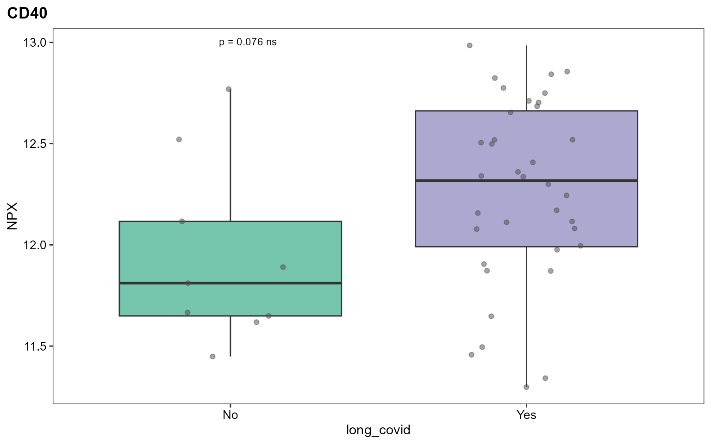
For a one-stop dimensionality-reduction plot, use
plot_dim_reduc(). It computes PCA/UMAP/t-SNE on the fly (or
re-uses a reduction already stored in reducedDims()) and
colors points by any sample covariate. Several reductions can be plotted
jointly in a single multi-panel figure:
plot_dim_reduc(oe_iris, type = "pca", color = "long_covid")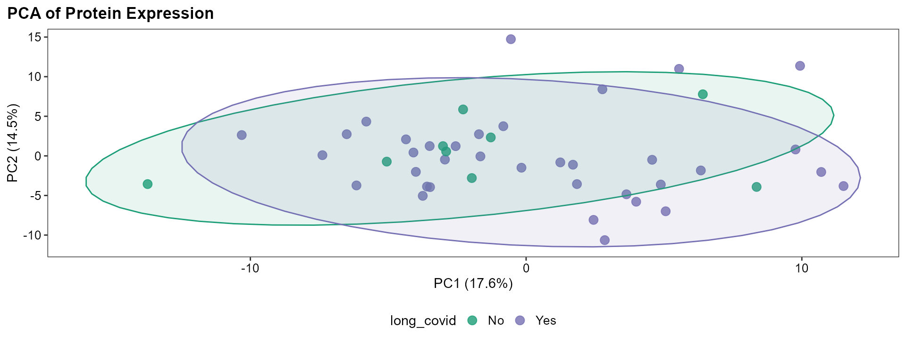
plot_dim_reduc(oe_iris, type = c("pca", "umap", "tsne"),
color = "long_covid", perplexity = 10)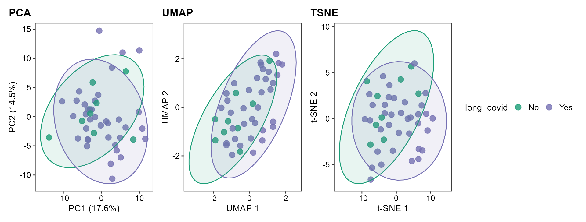
You can still extract the raw matrices with npx() /
lod() / colData() / rowData()
when you need them directly.
Plotting Functions
1. Boxplot — Single Protein by Group
Compare NPX values for a single protein across groups, with optional statistical test annotations.
plot_boxplot(iris_longcovid, assay = "CD40", group = "long_covid")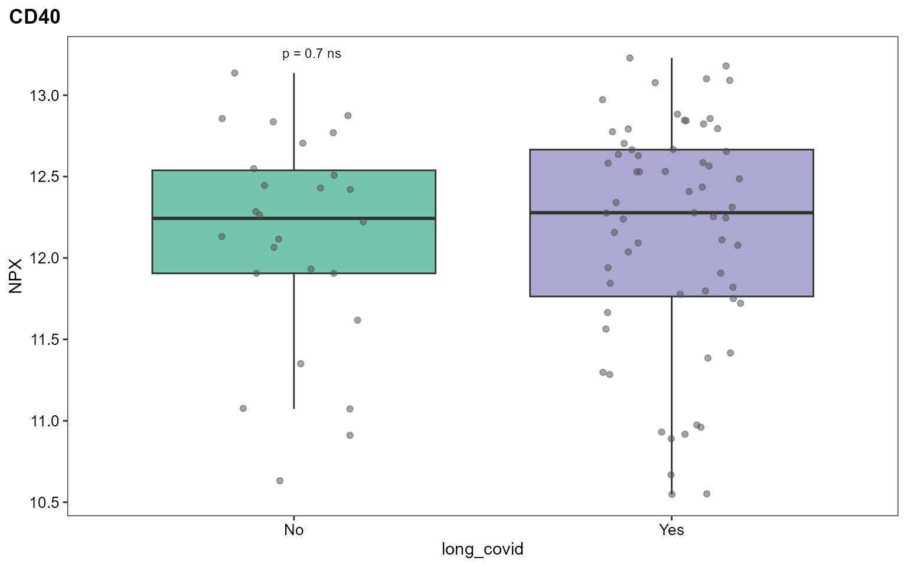
With custom comparisons (requires the ggpubr
package):
plot_boxplot(
iris_longcovid,
assay = "CD40",
group = "timing_month",
test = "wilcox.test",
comparisons = list(c("Acute", "3 months"), c("3 months", "12 months")),
title = "CD40 Expression Over Time"
)2. Volcano Plot — Differential Expression
Visualize fold change versus significance for each protein. The function validates p-values and handles exact zeros gracefully.
# Using the Bansal univariate test results. bansal_univariate's `estimate`
# is on a much smaller natural scale than a typical log2 fold change, so
# fc_threshold needs to be set accordingly (the default of 1 would mark
# every point "NS" here) — see ?plot_volcano.
plot_volcano(
bansal_univariate,
pval_col = "p.value",
fc_col = "estimate",
assay_col = "Assay",
pval_threshold = 0.05,
fc_threshold = 0.1,
max_labels = 10,
title = "Long COVID: Protein Differential Expression"
)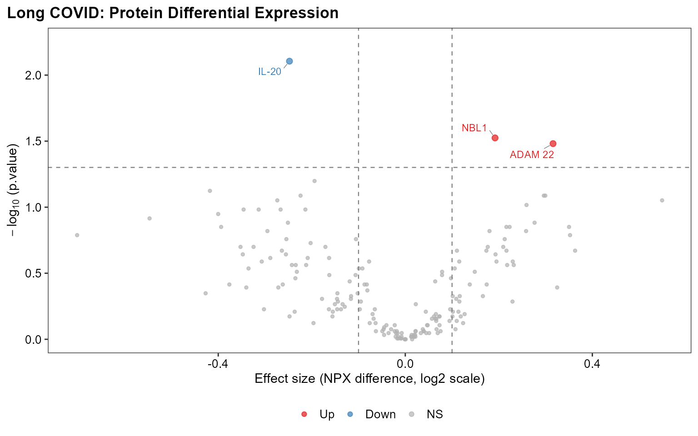
For raw fold-change ratios (not yet log2-transformed), set
transform_fc = TRUE:
plot_volcano(de_results, pval_col = "pval", fc_col = "FC",
transform_fc = TRUE)3. Dimensionality Reduction — PCA / UMAP / t-SNE
Project samples onto a low-dimensional representation, colored by a
grouping variable with optional confidence ellipses.
plot_dim_reduc() computes PCA, UMAP, or t-SNE on the fly
and can combine several reductions into one figure.
plot_dim_reduc(beatmg_npx_merged, type = "pca", color = "Timepoint",
title = "BeatMG: PCA by Timepoint")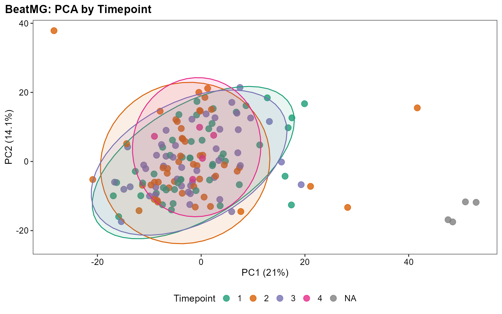
Without grouping, all points are shown in a single color:
plot_dim_reduc(beatmg_npx_merged[beatmg_npx_merged$Timepoint == 1, ],
type = "pca", title = "BeatMG Baseline Samples")
4. UMAP — Non-Linear Projection
UMAP captures non-linear structure that PCA may miss. The
seed parameter ensures reproducibility.
plot_umap(beatmg_npx_merged, color_by = "Timepoint",
n_neighbors = 10, seed = 42,
title = "BeatMG: UMAP by Timepoint")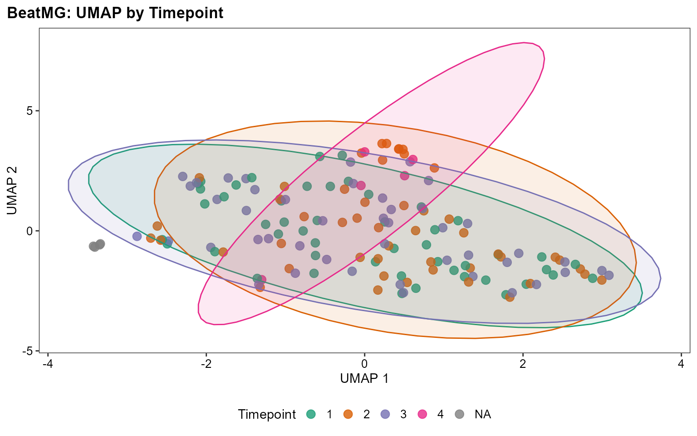
5. Heatmap — Clustered Expression Matrix
Proteins are clustered by expression pattern. NAs are imputed with column means and a warning is issued. The function accepts both long and wide formats.
# Long-format input (rows clustered, columns as samples)
plot_heatmap(
beatmg_npx_merged[beatmg_npx_merged$Timepoint == 1, ],
sample_col = "SampleID",
scale = "row",
show_rownames = FALSE,
main = "BeatMG Baseline Protein Expression"
)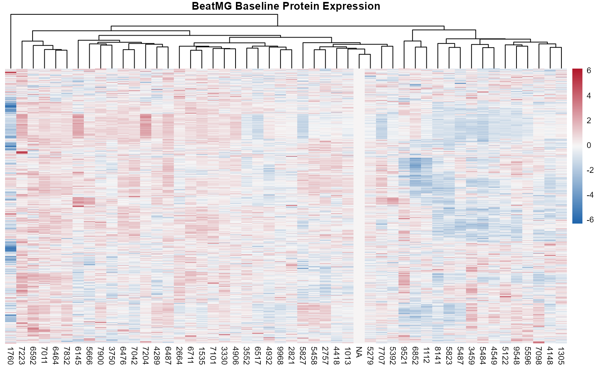
When given an OlinkExperiment, the sample covariates
stored in colData() (e.g. Sex,
long_covid, timing_month) are shown
automatically as annotation tracks above the samples. Pass
annotation_cols to select a specific subset:
plot_heatmap(oe_iris, scale = "row", show_rownames = FALSE,
main = "Long COVID: Protein Expression by Covariate")
Biomarkers can also be grouped into sets (e.g. the
Olink panel each protein belongs to) with a row annotation track, via
annotation_rows (automatically filled from
rowData for an OlinkExperiment):
plot_heatmap(oe_iris, scale = "row", show_rownames = FALSE,
annotation_rows = "Panel",
main = "Long COVID: Protein Expression by Biomarker Set")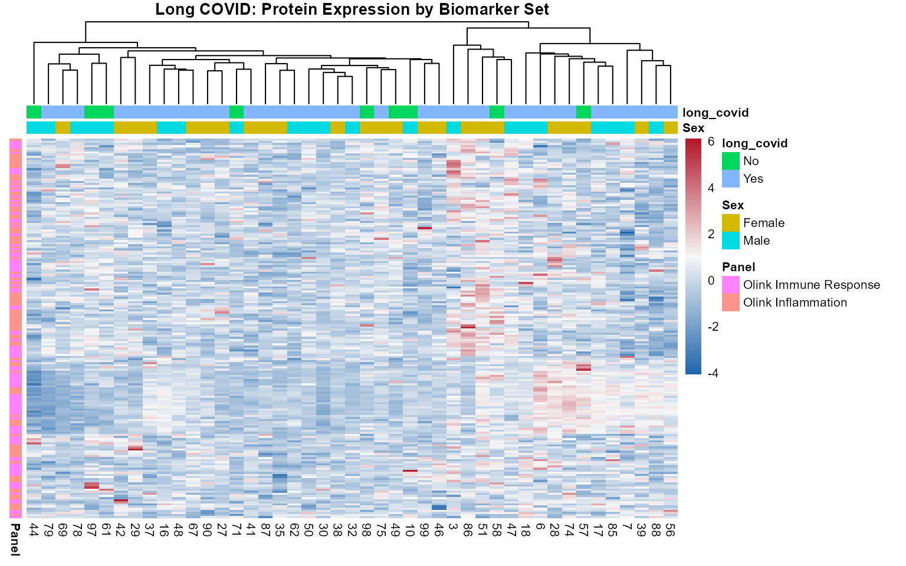
To group the biomarkers by their enriched pathways
instead of by Olink panel, set pathway_annotation = TRUE
(or pass a precomputed protein → pathway mapping) — see Pathway Enrichment &
Protein Networks below for a full, runnable example with
enrich_pathways().
Wide-format input with wide = TRUE:
# qinfeng_npx is already wide: 66 samples x 92 proteins
plot_heatmap(qinfeng_npx, wide = TRUE, sample_col = "SampleID",
scale = "column", show_colnames = FALSE,
main = "Tuberculosis Biomarker Profiles")6. Dot Plot — Multi-Protein Comparison
Dot size encodes significance (-log10 p-value); color encodes direction of change. Useful for survey-level views across many proteins.
plot_dotplot(
beatmg_npx_merged,
group = "Timepoint",
assays = c("CD83", "CXCL8", "CD40", "CD70", "CCL20",
"TNFRSF4", "TNF", "IL6", "CXCL10", "IFNG",
"CCL3", "CCL4", "IL10", "TGFB1", "VEGFA"),
top_n = 15,
title = "BeatMG: Protein Changes vs Baseline"
)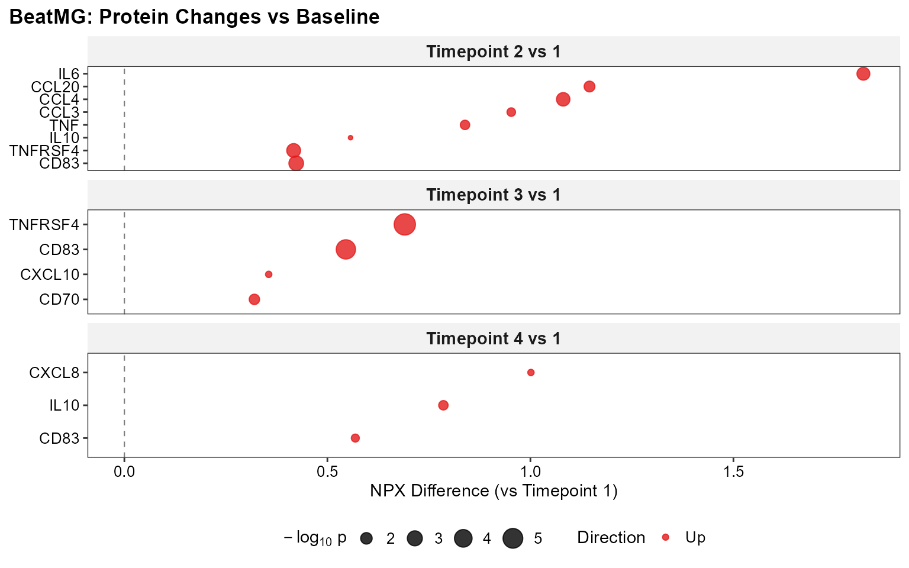
If an assay name is misspelled, a warning is now emitted instead of silently omitting it.
7. Correlation Matrix
Compute pairwise correlations between the most variable proteins.
plot_corr(
beatmg_npx_merged[beatmg_npx_merged$Timepoint == 1, ],
method = "spearman",
top_n = 25,
corr_type = "upper"
)
The new display_method parameter allows alternative
visual encodings:
plot_corr(beatmg_npx_merged, method = "spearman", top_n = 15,
display_method = "ellipse")
plot_corr(beatmg_npx_merged, method = "pearson", top_n = 10,
display_method = "number")Valid display_method options are: "color",
"circle", "ellipse", "number",
"shade", and "pie".
8. Longitudinal Trajectories
Individual spaghetti plots with optional group-level smoothing lines.
# Subset to a manageable number of proteins for demonstration
plot_trajectory(
bansal_longitudinal,
subject_id = "Assigned Participant ID",
time = "Time",
assay = "HAGH",
group = "Long_COVID status",
smooth_method = "loess",
title = "HAGH Trajectory by Long COVID Status"
)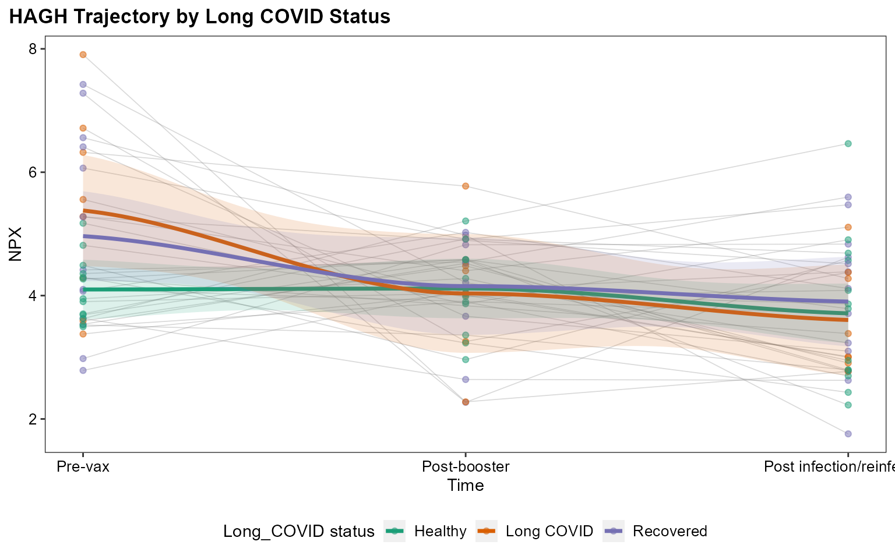
The new facet argument makes one panel per subject, and
lod_col adds a dashed “MaxLOD” reference line per panel
(matching the report figures):
plot_trajectory(
beatmg_npx_merged,
assay = "IL4",
time = "Timepoint",
facet = "subject",
lod_col = "LOD"
)9. Mean Profile — Mean ± CI over Time by Group
The classic “mean NPX trajectory” figure: mean ± 95% CI at each time point, with one line per group.
plot_mean_profile(
iris_longcovid,
assay = "CD40",
x = "timing_month",
group = "long_covid",
title = "CD40 Mean NPX Trajectory by Long COVID Status"
)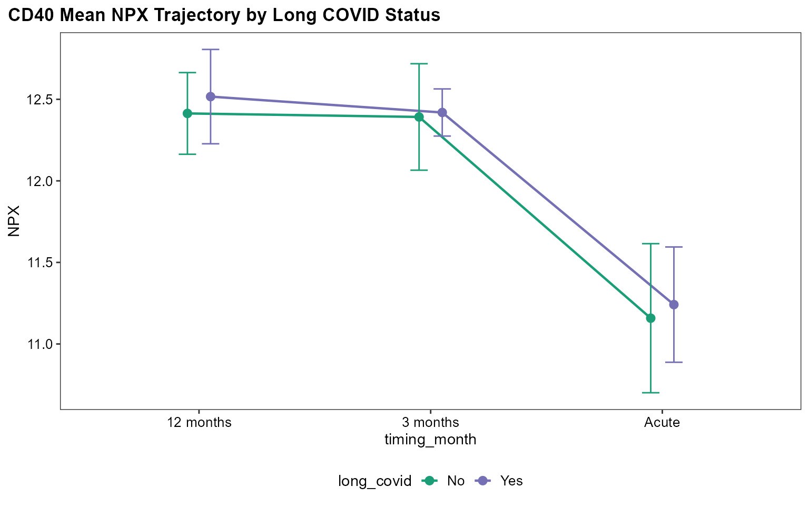
With error_bar_type = "se" the bars show the standard
error instead of the confidence interval. Set
add_signif = TRUE (requires ggpubr) to
annotate between-group p-values at each time point.
10. Spaghetti Plot — Individual Trajectories Faceted by Group
One line per subject, with an overlaid trend curve, optionally faceted by a grouping variable.
plot_spaghetti(
bansal_longitudinal,
assay = "HAGH",
subject_id = "Assigned Participant ID",
time = "Time",
facet_by = "Long_COVID status"
)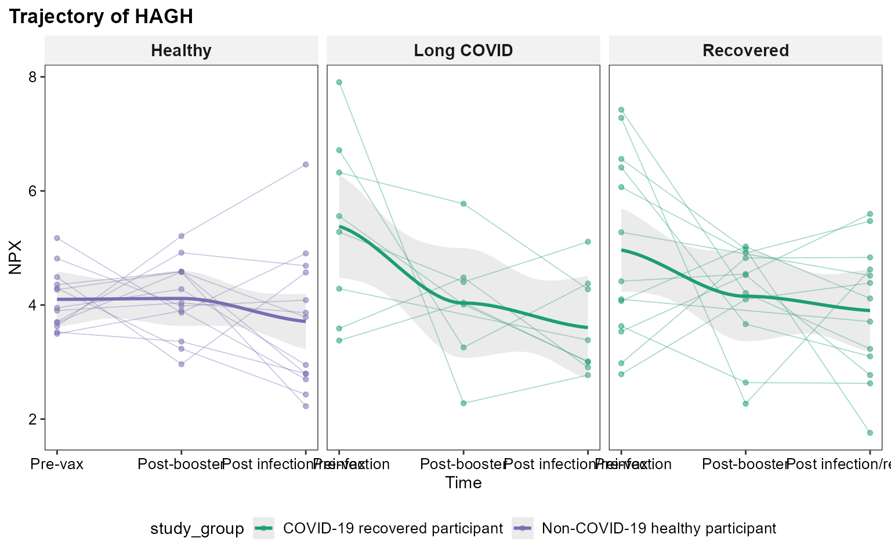
11. Violin + Boxplot
Distribution of a single protein across a categorical axis (e.g. time point), with an overlaid boxplot. Optionally filled by group.
plot_violin(
iris_longcovid,
assay = "CD40",
x = "timing_month",
group = "long_covid"
)
The single-assay comparison plots (plot_boxplot(),
plot_violin(), plot_mean_profile()) can
annotate p-values for each pairwise comparison between
the x-axis levels (here, each pair of time points) with
show_p_value (numeric p-values) and/or
show_significant (significance stars). With
show_significant = TRUE only comparisons with p <
p_cutoff (default 0.05) are drawn, so the plot is not
cluttered with non-significant bars; set p_cutoff = NULL to
show every comparison. Brackets are placed above the data automatically
(bracket_nudge_y adjusts the height,
step_increase the gap between stacked bars), so they never
overlap the points/violins. This requires the ggpubr
package:
plot_violin(
iris_longcovid,
assay = "CD40",
x = "timing_month",
group = "long_covid",
show_significant = TRUE
)
12. PCA Scree Plot
Variance explained per principal component, with the cumulative line.
plot_scree(
beatmg_npx_merged[beatmg_npx_merged$Timepoint == 1, ],
n_pcs = 10,
title = "BeatMG Baseline: Variance Explained"
)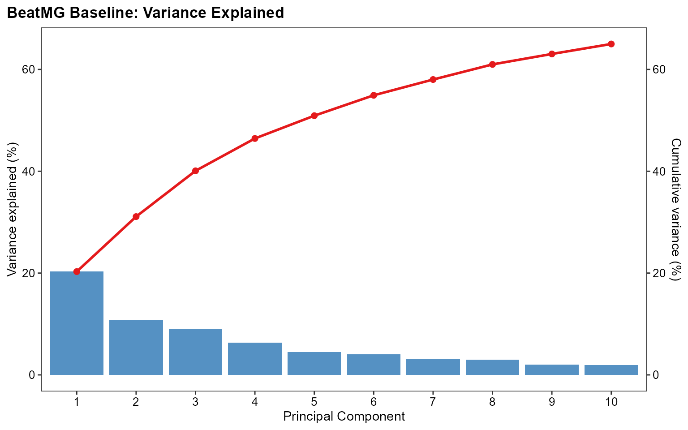
13. PCA Loadings Plot
The variables (proteins) with the largest loadings for each of the top principal components.
plot_loadings(
beatmg_npx_merged[beatmg_npx_merged$Timepoint == 1, ],
components = 1:3,
top_n = 8
)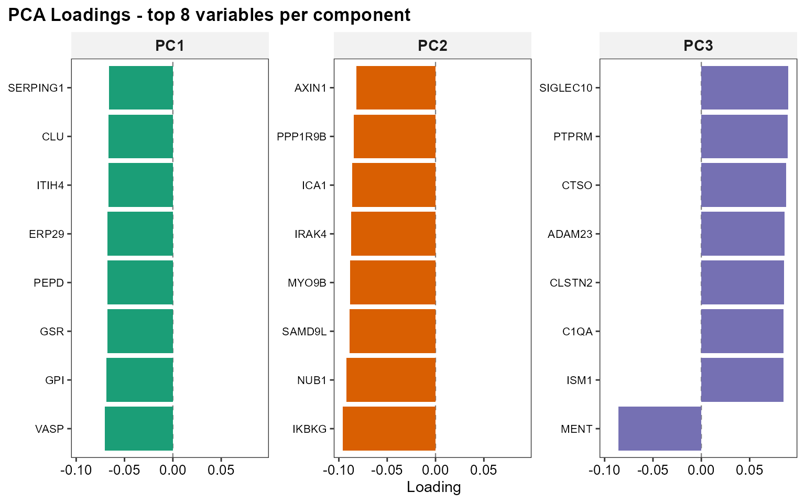
14. LMER Point-Range Plot
Point-range (mean ± CI) visualization of a linear mixed model,
faceted by protein. The probc dataset is a simulated
two-group longitudinal Olink panel (see ?probc). Pass
add_pvalue = TRUE to fit
value ~ x * group + (1 | random) per protein with
lme4 and annotate the group-effect p-value on each
panel.
15. Regression Scatter — Linear Smooth
Scatter of NPX against a continuous x-axis with an overlaid linear smooth, optionally colored and/or faceted by a grouping variable.
plot_regression(
probc,
assay = "IL6",
x = "Time",
color_by = "Project",
title = "IL6 NPX Trend (Simulated PROBC)"
)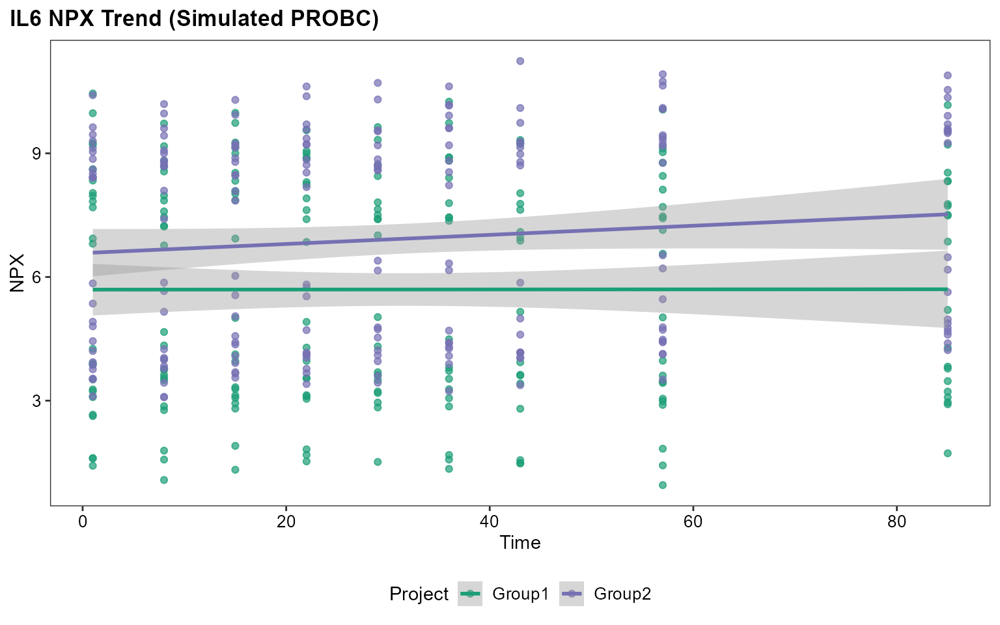
16. Sample QC — Median NPX versus IQR
The standard sample-level quality check for Olink data. Each point is
one sample on one panel; samples whose median NPX or interquartile range
lies more than sd_cutoff standard deviations from the panel
mean are flagged and labelled, and samples that carry an Olink
QC_Warning are drawn as triangles. Colour the points by a
sample-level column such as the plate to look for batch structure.
plot_qc(probc)
plot_qc(probc, color_by = "PlateID", sd_cutoff = 2.5, label_outliers = FALSE)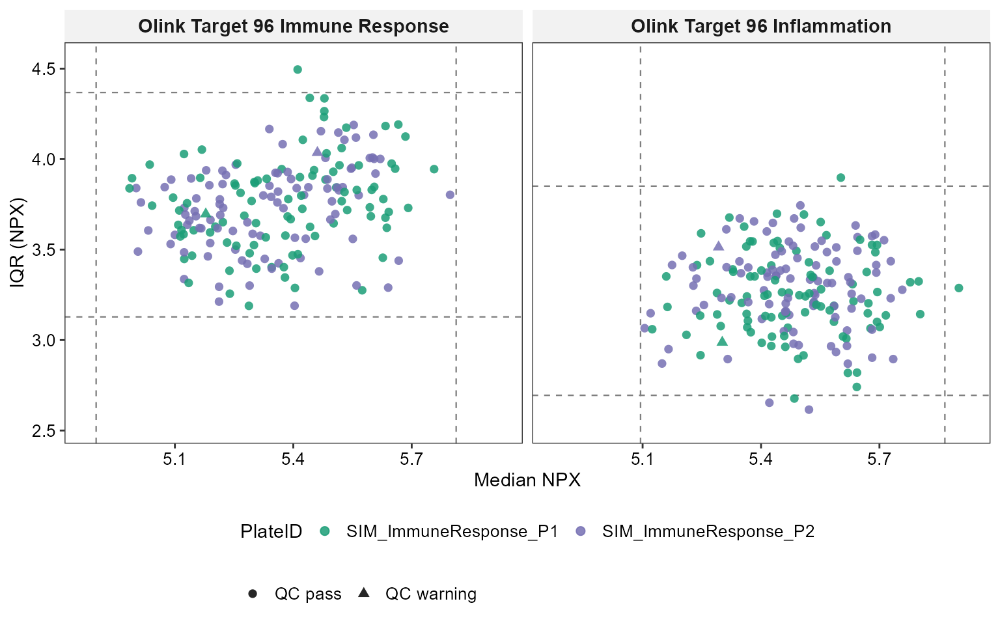
17. Assay Detectability — Percent of Samples Above LOD
Which proteins are worth analysing? plot_lod() ranks
every assay by the percentage of samples whose NPX is above the limit of
detection and labels the least detectable ones. The threshold is a
convention (here 75 percent), not a rule: choose it for your study.
plot_lod(probc, threshold = 75)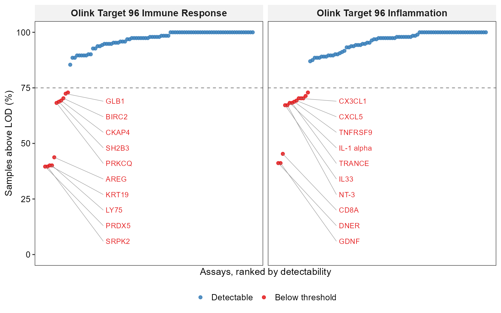
18. ROC Curves for Individual Proteins
ROC curves for a two-group comparison, with the AUC and its DeLong 95
percent confidence interval in the legend (requires pROC).
Set show_direction = TRUE to mark whether higher
(+) or lower (-) NPX values are associated
with the positive group. Each curve is the apparent performance of one
protein on these samples; it is not cross-validated. Subset the data to
the two groups first, and to one time point if there are repeated
measures.
baseline <- probc[probc$Timepoint == 1, ]
plot_roc(baseline, assays = c("IL6", "TNF", "IL8"), group = "Project",
show_direction = TRUE)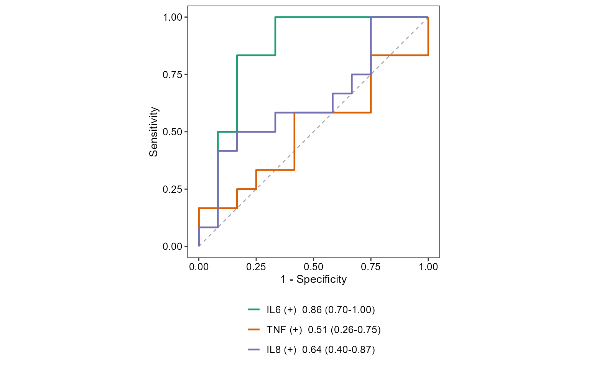
19. Bridge Sample & Plate QC (plot_bridge(),
plot_plate_qc())
When a study spans multiple plates or batches,
plot_plate_qc() summarizes sample median NPX distributions
per plate, and plot_bridge() draws a Bland-Altman (or
scatter) comparison of overlapping bridge reference samples:
plot_plate_qc(probc)
b1 <- probc[probc$Timepoint == 1, ]
b2 <- b1
b2$NPX <- b1$NPX + rnorm(nrow(b1), mean = 0.12, sd = 0.18)
plot_bridge(b1, b2, type = "bland_altman")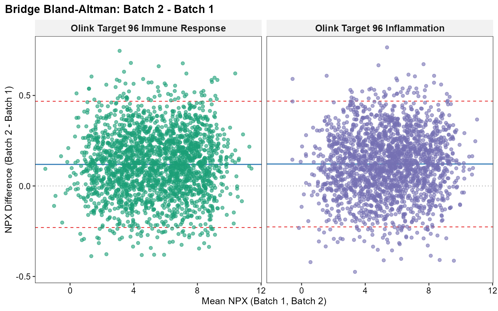
Journal-Size Figures
By default text and marks are sized for the screen (11 pt). A figure
that is drawn on a large canvas and shrunk to a journal column ends up
with text that is too small, or with labels that collide. Draw it at its
final size instead, with one option, and every plot_*()
function sizes its text and marks from it:
old <- olinkviz_options(base_size = 7, axes = "l") # 7 pt text, left and bottom axes
p <- plot_boxplot(probc, assay = "IL6", group = "Project")
p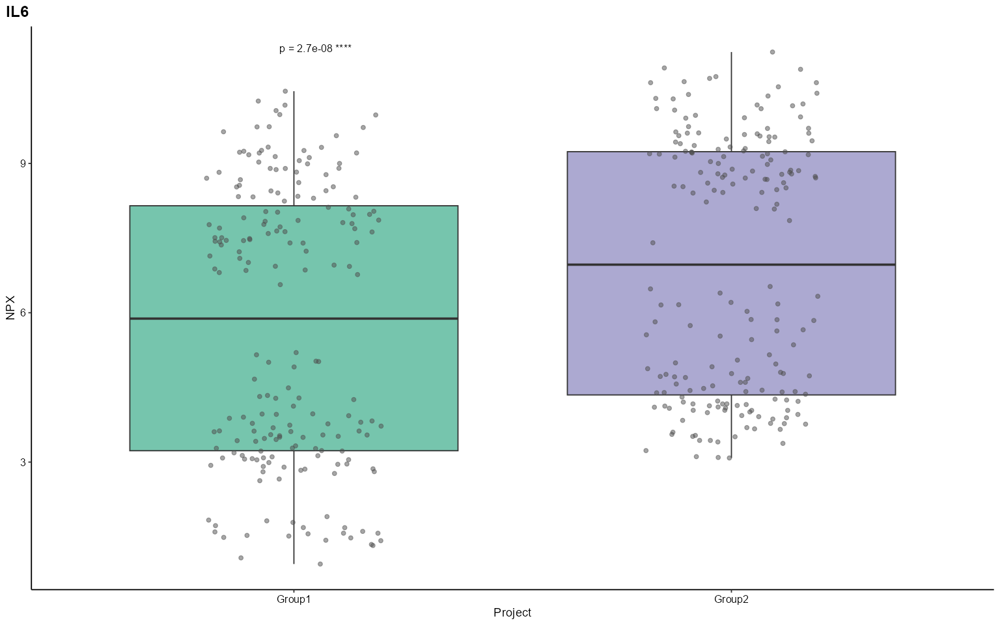
save_olinkviz() then writes the file at the exact
physical size (89 mm is a typical single column; check the author
guidelines of your journal), with embedded fonts in the PDF:
files <- save_olinkviz(p, file.path(tempdir(), "il6_boxplot"),
width = 89, height = 70, formats = c("pdf", "png"))
basename(files)
#> [1] "il6_boxplot.pdf" "il6_boxplot.png"
options(old) # restore the previous sizing optionsThe smallest text in a plot is base_size - 1 (the tick
labels), so choose a base size one point above the smallest text your
journal allows: 7 for most journals, 9 where the minimum is 8 pt.
Any base size below the 11 pt default is “journal-size mode”, where a
few things that depend on the canvas also adapt: long titles wrap,
plot_corr_triangle() fits its circles to the grid, a
heatmap with more than 30 samples (at 7 pt) leaves out the sample names,
and -log10 axis labels are plain text (a typeset subscript
is drawn at 70 percent size, so at 7 pt it would be below the 5 to 6 pt
minimum most journals ask for). At the default size nothing changes,
apart from the fixes listed in NEWS.md.
plot_heatmap() and plot_corr() draw with
base graphics: open the device yourself, for example
grDevices::cairo_pdf("fig.pdf", width = 89 / 25.4, height = 70 / 25.4),
call the function, and close the device with
grDevices::dev.off().
Pathway Enrichment & Protein Networks
Two related questions come up constantly in Olink analysis: what biology do my hits belong to (pathway enrichment), and how are my hits connected (protein/pathway networks). OlinkViz has one function for each.
Enrichment: enrich_pathways()
Runs GO/KEGG enrichment via gprofiler2 and returns a
tidy protein → pathway mapping (needs an internet connection).
Restricting sources to GO:BP/KEGG
avoids GO Cellular Component terms like “extracellular region” — true of
nearly every secreted Olink protein, so uninformative as a grouping.
Here we enrich the 15 most up-regulated Bansal proteins — the same set
the network figure below visualizes:
top_de <- head(bansal_univariate[order(-bansal_univariate$estimate), ], 15)
pathways <- enrich_pathways(top_de$UniProt, sources = c("GO:BP", "KEGG"))
if (!is.null(pathways)) {
head(pathways[, c("Protein", "Pathway", "p_value")])
}
#> Protein Pathway p_value
#> 1 Q99731 cell adhesion 0.001910817
#> 2 Q8NFP4 cell adhesion 0.001910817
#> 3 O75077 cell adhesion 0.001910817
#> 4 Q9P0K1 cell adhesion 0.001910817
#> 5 Q9HCK4 cell adhesion 0.001910817
#> 6 O15444 cell adhesion 0.001910817Feed a protein → pathway mapping into
plot_heatmap(..., pathway_annotation = <mapping>)
(see the Heatmap section above) to group biomarkers by enriched pathway
instead of by Olink panel.
Networks: plot_pathway_network() and
plot_network()
enrich_pathways() returns Protein in the
same identifier space you queried with (UniProt here), so map it back to
Assay names and keep only pathways shared by several
proteins — a handful of real, multi-gene hubs instead of dozens of
one-gene terms (or, worse, a “network” of exactly two Olink panels with
no edges between proteins at all):
if (!is.null(pathways) && nrow(pathways) > 0) {
pw_map <- merge(pathways, top_de[, c("UniProt", "Assay")], by.x = "Protein", by.y = "UniProt")
pw_map <- unique(pw_map[, c("Assay", "Pathway")])
coverage <- table(pw_map$Pathway)
pw_map <- pw_map[pw_map$Pathway %in% names(coverage)[coverage >= 3], ]
} else {
pw_map <- NULL
}
plot_pathway_network(bansal_univariate, assay_col = "Assay", value_col = "estimate",
pathway_map = pw_map, top_n = 15, palette = "jewel",
title = "Top Dysregulated Proteins and Their Functional Modules")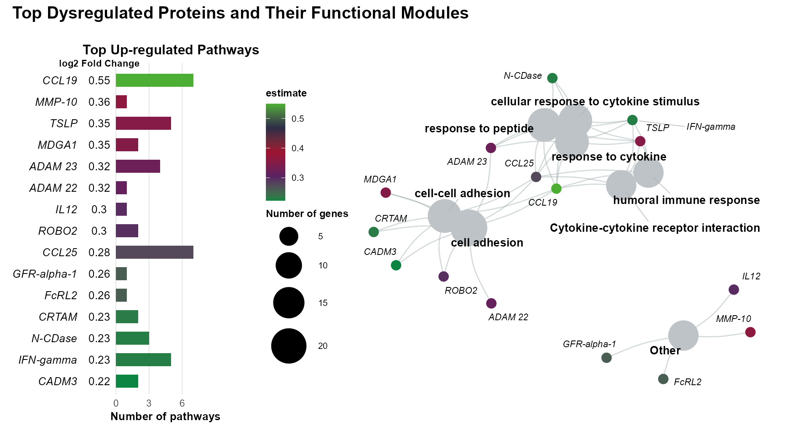
For a real protein-protein interaction network instead of a pathway
grouping, plot_network() queries the STRING database
directly (requires the rbioapi package and an internet
connection):
plot_network(c("IL6", "TNF", "CXCL10", "CD40", "IL10"))Data Utilities
Validating NPX Data
validate_npx() checks that your data has the minimum
required columns:
validate_npx(iris_longcovid)
# With a missing column — warns rather than stops
validate_npx(mtcars, fail_on_missing = FALSE)Converting Between Long and Wide Formats
Long to wide:
# Pivot a subset for demonstration
iris_sub <- iris_longcovid[iris_longcovid$timing_month == "Acute", ]
wide <- to_wide(iris_sub, sample_col = "IRIS_number")
wide[1:5, 1:6]
#> IRIS_number Sex long_covid timing_month IL8 VEGFA
#> 1 99 Female Yes Acute 5.24166 10.20731
#> 2 61 Male No Acute 4.67765 10.40073
#> 3 86 Female Yes Acute 5.65692 11.42994
#> 4 98 Female No Acute 5.62729 11.39714
#> 5 75 Female Yes Acute 4.70624 11.03180Duplicate sample-assay combinations are automatically averaged with a message:
# Create artificial duplicate to demonstrate replicate averaging
dup_row <- iris_sub[1, ]
iris_dup <- rbind(iris_sub, dup_row)
wide_dedup <- to_wide(iris_dup, sample_col = "IRIS_number")Wide to long:
# With automatic assay column detection
long <- to_long(wide, id_cols = "IRIS_number")
if (requireNamespace("DT", quietly = TRUE)) {
DT::datatable(head(long))
} else {
head(long)
}The new exclude_cols parameter lets you control which
columns are excluded from auto-detection when pivoting:
to_long(wide, id_cols = "IRIS_number",
exclude_cols = "Sex") %>% head(20) # explicit: only exclude "Sex"
#> IRIS_number Sex long_covid timing_month Assay NPX
#> 1 99 Female Yes Acute IL8 5.24166
#> 2 99 Female Yes Acute VEGFA 10.20731
#> 3 99 Female Yes Acute CD8A 10.58543
#> 4 99 Female Yes Acute MCP-3 2.45599
#> 5 99 Female Yes Acute GDNF 0.89861
#> 6 99 Female Yes Acute CDCP1 1.79942
#> 7 99 Female Yes Acute CD244 6.09629
#> 8 99 Female Yes Acute IL7 0.96627
#> 9 99 Female Yes Acute OPG 9.38285
#> 10 99 Female Yes Acute LAP TGF-beta-1 7.17724
#> 11 99 Female Yes Acute uPA 10.66074
#> 12 99 Female Yes Acute IL-17C 2.31181
#> 13 99 Female Yes Acute MCP-1 12.29401
#> 14 99 Female Yes Acute IL-17A 2.24297
#> 15 99 Female Yes Acute CXCL11 13.05433
#> 16 99 Female Yes Acute AXIN1 2.71468
#> 17 99 Female Yes Acute TRAIL 7.59333
#> 18 99 Female Yes Acute IL-20RA 0.52761
#> 19 99 Female Yes Acute CXCL9 6.65477
#> 20 99 Female Yes Acute CST5 4.65951Custom Themes and Palettes
theme_olinkviz() provides a clean, publication-ready
ggplot2 theme:
ggplot(mtcars, aes(wt, mpg, color = factor(cyl))) +
geom_point(size = 3) +
labs(title = "Custom OlinkViz Theme",
subtitle = "Using theme_olinkviz()") +
theme_olinkviz()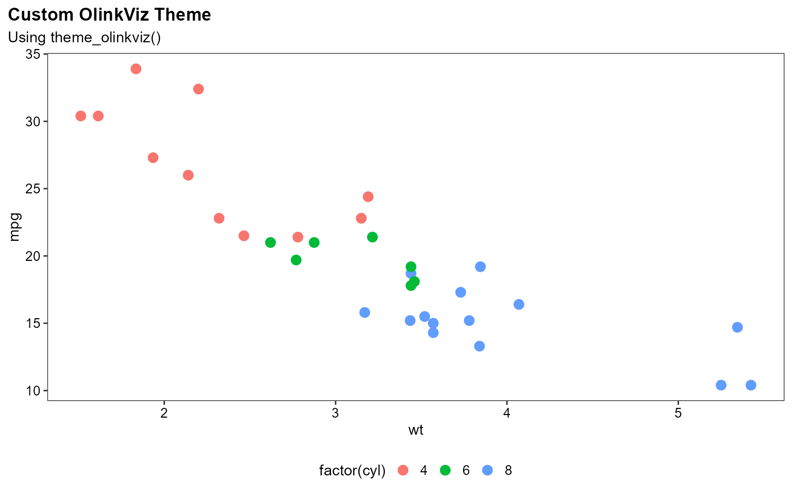
olinkviz_palette() returns colorblind-friendly
categorical colors using RColorBrewer’s Dark2 palette, extended via
interpolation when more colors are needed:
# Standard 8-color palette
scales::show_col(olinkviz_palette(8))
# Interpolated 12-color extension
scales::show_col(olinkviz_palette(12))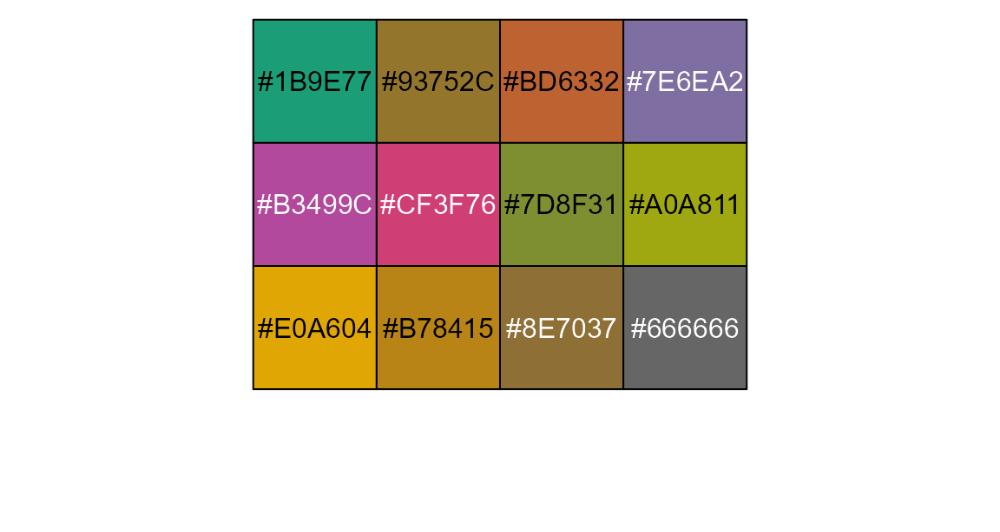
Interactive Exploration
Launch the Shiny app for interactive data exploration:
OlinkViz::run_shiny()The Shiny app allows you to:
- Browse all 11 built-in datasets with variable descriptions
- Upload your own CSV or Excel NPX files
- Select from 8 plot types with adjustable parameters
- Filter by assay, timepoint, and group
- Download publication-ready plots as PNG or PDF
Typical Workflow
A common analysis workflow using OlinkViz:
-
Inspect your data with
str()andvalidate_npx() -
Explore global structure with
plot_dim_reduc()orplot_umap() -
Survey many proteins with
plot_dotplot()orplot_heatmap() -
Identify hits with
plot_volcano()on statistical test results -
Investigate candidates with
plot_boxplot()for single proteins -
Track over time with
plot_trajectory()for longitudinal data -
Check relationships with
plot_corr()between top proteins
ALS Phenoconversion Biomarker Analyses
This worked example recreates the visualization strategy of Ran X, Wuu J, Qin ZS, McDermott MP, Cooper-Knock J, et al., Benatar M. (2026), “Longitudinal plasma proteomics predict phenoconversion to clinically manifest ALS”, Nature Medicine 32, 3417-3429. The paper used longitudinal Olink Explore HT proteomics from asymptomatic carriers of ALS-associated gene variants to find a 19-protein panel predicting “phenoconversion” (transition to clinically manifest disease) up to 5 years ahead of symptom onset.
OlinkViz has no genetic-carrier ALS cohort, so the figures below map
the same ideas onto the one bundled dataset with a real
observed state transition over time: iris_longcovid
participants who are Long-COVID-positive at the 3-month visit sometimes
resolve (become negative) by 12 months — 11 of 23 with month-12
follow-up, confirmed directly from the raw data below, not assumed. That
resolution event stands in for “phenoconversion”: same underlying
question (do early biomarkers anticipate a later change in clinical
state?), opposite direction (recovery, not onset). Where no dataset
supports a real longitudinal outcome, the cross-sectional Bansal Long
COVID vs Healthy contrast is used instead.
Building the resolution cohort
univ <- as.data.table(bansal_univariate)[order(p.value)]
iris <- as.data.table(iris_longcovid)
iris[, month_num := fcase(
timing_month == "Acute", 0,
timing_month == "3 months", 3,
timing_month == "12 months", 12,
default = NA_real_
)]
# Status at each visit, wide, defines who is "at risk" of resolution
stat_wide <- dcast(unique(iris[, .(IRIS_number, month_num, long_covid)]),
IRIS_number ~ month_num, value.var = "long_covid")
setnames(stat_wide, c("IRIS_number", "m0", "m3", "m12"))
at_risk <- stat_wide[m3 == "Yes" & !is.na(m12)]
at_risk[, resolved := as.integer(m12 == "No")]
at_risk[, time_months := 9] # fixed 3 -> 12 month follow-up window
nrow(at_risk); sum(at_risk$resolved)
#> [1] 23
#> [1] 11
# Baseline (month-3) protein z-scores for the resolution cohort
m3_npx <- iris[month_num == 3 & IRIS_number %in% at_risk$IRIS_number,
.(IRIS_number, Assay, NPX)]
m3_npx[, z := as.numeric(scale(NPX)), by = Assay]
m3_wide_z <- dcast(m3_npx, IRIS_number ~ Assay, value.var = "z")1. Disease-state volcano (paper Fig 1a)
The paper’s manifest-disease-vs-healthy volcano is exactly the Volcano Plot example from Plotting Functions above, run on the same Bansal Long COVID vs Healthy cohort — no need to re-run it here.
2. Pathway enrichment by direction (paper Fig 1b/1c)
Same enrich_pathways()/gprofiler2 mechanics
as Pathway Enrichment
& Protein Networks above, split by direction of change to match
the paper’s separate up/down panels (not evaluated here — needs internet
access):
up_list <- unique(univ[p.value < 0.15 & estimate > 0]$UniProt)
down_list <- unique(univ[p.value < 0.15 & estimate < 0]$UniProt)
gost_up <- gprofiler2::gost(up_list[!is.na(up_list)],
organism = "hsapiens", sources = c("GO:BP", "KEGG"))
gost_down <- gprofiler2::gost(down_list[!is.na(down_list)],
organism = "hsapiens", sources = c("GO:BP", "KEGG"))See man/figures/fig_pathway_direction.png for the output
(chemotaxis/cell migration enriched among up-regulated proteins; viral
protein interaction and inflammatory response among down-regulated
ones), or run scripts/generate_figures_natmed.R, which
builds the two bar charts from
gost_up/gost_down and combines them with
patchwork.
3. Functional module network (paper Fig 1d)
Same 15 up-regulated Bansal proteins, same
enrich_pathways() + plot_pathway_network()
recipe as Pathway
Enrichment & Protein Networks above — see that section for the
figure and the code that builds it.
4. Protein levels before vs after resolution (paper Fig 1e/2a)
resolvers <- at_risk[resolved == 1]$IRIS_number
res_npx <- iris[IRIS_number %in% resolvers & month_num %in% c(3, 12),
.(IRIS_number, Assay, NPX, month_num)]
top_var_res <- res_npx[, .(v = var(NPX, na.rm = TRUE)), by = Assay][order(-v)][1:40]$Assay
res_npx <- res_npx[Assay %in% top_var_res]
res_npx[, z := as.numeric(scale(NPX)), by = Assay]
res_mean <- res_npx[, .(z = mean(z, na.rm = TRUE)), by = .(Assay, month_num)]
res_mean[, TimeBin := ifelse(month_num == 3, "Active (Month 3)", "Resolved (Month 12)")]
res_wide <- as.data.frame(dcast(res_mean, TimeBin ~ Assay, value.var = "z"))
plot_heatmap(
res_wide, wide = TRUE, sample_col = "TimeBin",
scale = "none", cluster_rows = TRUE, cluster_cols = FALSE,
show_rownames = TRUE, show_colnames = TRUE, fontsize = 7,
main = sprintf("Protein Levels Before/After Long COVID Resolution (n=%d)", length(resolvers))
)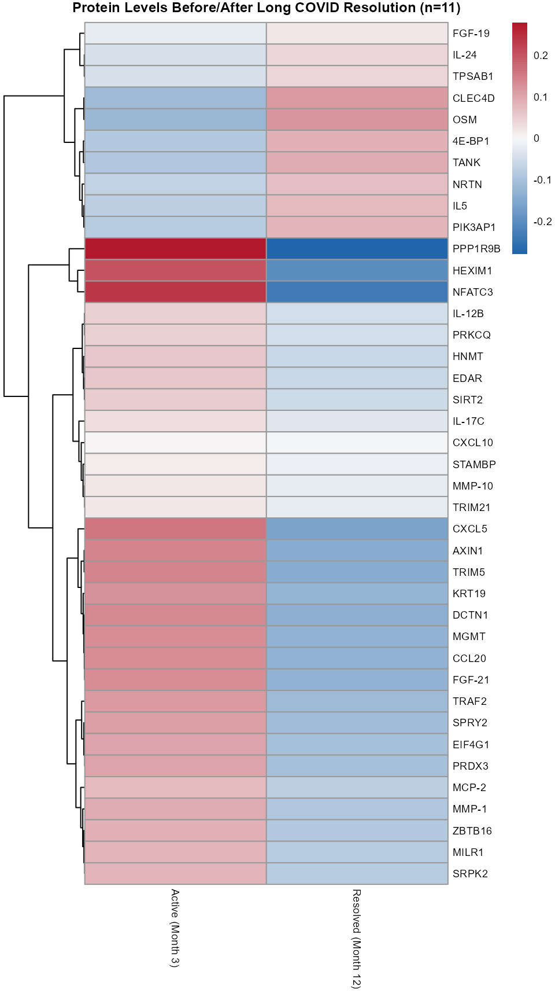
5. Protein trajectories by status (paper Fig 2b)
m3_all <- iris[month_num == 3, .(IRIS_number, Assay, NPX, long_covid)]
wilcox_m3 <- m3_all[, {
yy <- NPX[long_covid == "Yes"]; nn <- NPX[long_covid == "No"]
if (length(yy) < 3 || length(nn) < 3) list(p = NA_real_)
else list(p = tryCatch(suppressWarnings(wilcox.test(yy, nn)$p.value), error = function(e) NA_real_))
}, by = Assay]
top4 <- wilcox_m3[!is.na(p)][order(p)][1:4]$Assay
traj_plots <- lapply(top4, function(a) {
plot_trajectory(as.data.frame(iris), subject_id = "IRIS_number", time = "month_num",
assay = a, group = "long_covid", smooth_method = "loess", title = a) +
labs(x = "Months", color = "Long COVID")
})
wrap_plots(traj_plots, ncol = 2) + plot_layout(guides = "collect")
6. Kaplan-Meier: time to resolution (paper Fig 3b/3c)
A baseline (month-3) 8-protein signature, median-split into two risk groups, against time to resolution. With only two real follow-up visits, every subject shares the same 9-month assessment window, so each curve takes one step rather than a smooth decline — an honest consequence of the coarser visit schedule, not a continuous-surveillance KM curve like the paper’s:
km_dt <- merge(at_risk[, .(IRIS_number, time_months, resolved)], m3_wide_z, by = "IRIS_number")
assay_cols <- setdiff(names(km_dt), c("IRIS_number", "time_months", "resolved"))
assoc <- data.table(Assay = assay_cols)
assoc[, p := vapply(Assay, function(a) {
tryCatch(suppressWarnings(wilcox.test(km_dt[[a]] ~ km_dt$resolved)$p.value),
error = function(e) NA_real_)
}, numeric(1))]
top_risk <- assoc[!is.na(p)][order(p)][1:min(8, .N)]$Assay
km_dt[, risk_score := rowMeans(.SD, na.rm = TRUE), .SDcols = top_risk]
km_dt[, risk_group := ifelse(risk_score > median(risk_score),
"High baseline signature", "Low baseline signature")]
fit <- survfit(Surv(time_months, resolved) ~ risk_group, data = km_dt)
sd_ <- survdiff(Surv(time_months, resolved) ~ risk_group, data = km_dt)
p_logrank <- 1 - pchisq(sd_$chisq, length(sd_$n) - 1)
km_df <- data.table(time = fit$time, surv = fit$surv, lower = fit$lower, upper = fit$upper,
strata = rep(names(fit$strata), fit$strata))
km_df[, strata := sub(".*risk_group=", "", strata)]
km0 <- data.table(time = 0, surv = 1, lower = 1, upper = 1, strata = unique(km_df$strata))
km_df <- rbind(km0, km_df)[order(strata, time)]
ggplot(km_df, aes(x = time, y = surv, color = strata)) +
geom_step(linewidth = 1.1) +
geom_ribbon(aes(ymin = lower, ymax = upper, fill = strata), alpha = 0.12, colour = NA) +
scale_color_manual(values = olinkviz_palette(2), name = NULL) +
scale_fill_manual(values = olinkviz_palette(2), guide = "none") +
coord_cartesian(ylim = c(0, 1)) +
labs(x = "Months from active Long COVID (month-3 visit)",
y = "Probability of remaining symptomatic",
title = "Baseline Protein Signature Predicts Time to Resolution",
subtitle = sprintf("n=%d Long COVID-positive at month 3 (%d resolved by month 12); log-rank p=%.3f",
nrow(km_dt), sum(km_dt$resolved), p_logrank)) +
theme_olinkviz()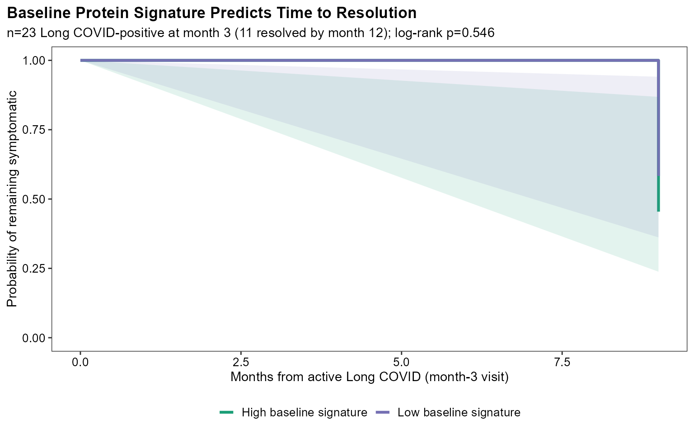
7. Resolution ROC + cross-analysis protein overlap (paper Fig 4b/4c)
The left panel is a standard ROC (individual proteins in grey, the
8-protein signature in colour). The right panel is a small hand-rolled
UpSet plot — OlinkViz has no UpSet dependency, so this helper builds one
from a bar chart of intersection sizes plus a dot matrix, both in
ggplot2:
roc_score <- roc(km_dt$resolved, km_dt$risk_score, quiet = TRUE)
roc_score_ci <- as.numeric(ci.auc(roc_score))
sc_co <- coords(roc_score, seq(0, 1, length.out = 150), ret = c("specificity", "sensitivity"))
ind_rocs <- rbindlist(lapply(top_risk, function(a) {
ro <- roc(km_dt$resolved, km_dt[[a]], quiet = TRUE)
co <- coords(ro, seq(0, 1, length.out = 60), ret = c("specificity", "sensitivity"))
data.table(Assay = a, spec = co$specificity, sens = co$sensitivity)
}))
p_roc <- ggplot() +
geom_abline(linetype = "dashed", colour = "grey65") +
geom_path(data = ind_rocs, aes(1 - spec, sens, group = Assay), colour = "grey55",
linewidth = 0.35, alpha = 0.4) +
geom_path(data = sc_co, aes(1 - specificity, sensitivity), colour = "darkorange", linewidth = 1.4) +
coord_equal(xlim = c(0, 1), ylim = c(0, 1)) +
labs(x = "1 - Specificity", y = "Sensitivity",
title = "Predicting Resolution from Month-3 Proteins",
subtitle = sprintf("8-protein signature AUC = %.2f (95%% CI %.2f-%.2f)",
as.numeric(auc(roc_score)), roc_score_ci[1], roc_score_ci[3])) +
theme_olinkviz()
# Minimal UpSet-style plot: intersection-size bars + a set-membership dot matrix
simple_upset <- function(sets, min_size = 1, subtitle = NULL) {
sets <- Filter(function(s) length(s) > 0, sets)
all_items <- unique(unlist(sets))
mem <- sapply(sets, function(s) all_items %in% s)
combo_key <- apply(mem, 1, function(r) paste(as.integer(r), collapse = ""))
combo_dt <- data.table(item = all_items, ckey = combo_key)
combo_sizes <- combo_dt[, .N, by = "ckey"][N >= min_size][order(-N)]
combo_sizes <- combo_sizes[ckey != paste(rep(0, length(sets)), collapse = "")]
set_names <- names(sets)
combo_sizes[, combo_id := factor(ckey, levels = ckey)]
dot_dt <- combo_sizes[, {
bits <- as.integer(strsplit(ckey, "")[[1]])
data.table(set = set_names, on = as.logical(bits))
}, by = combo_id]
dot_dt[, set := factor(set, levels = rev(set_names))]
p_bar <- ggplot(combo_sizes, aes(x = combo_id, y = N)) +
geom_col(fill = "grey30", width = 0.6) +
geom_text(aes(label = N), vjust = -0.4, size = 3.2) +
scale_y_continuous(expand = expansion(mult = c(0, 0.16))) +
labs(x = NULL, y = "Intersection size", subtitle = subtitle) +
theme_olinkviz() +
theme(axis.text.x = element_blank(), axis.ticks.x = element_blank())
p_dot <- ggplot(dot_dt, aes(x = combo_id, y = set)) +
geom_line(data = dot_dt[on == TRUE], aes(group = combo_id), colour = "grey20") +
geom_point(aes(colour = on), size = 3) +
scale_colour_manual(values = c(`TRUE` = "grey15", `FALSE` = "grey85"), guide = "none") +
labs(x = NULL, y = NULL) +
theme_olinkviz() +
theme(axis.text.x = element_blank(), axis.ticks.x = element_blank())
p_bar / p_dot + plot_layout(heights = c(2.2, 1))
}
sig_bansal <- unique(univ[p.value < 0.1]$Assay)
sig_iris_cross <- unique(wilcox_m3[!is.na(p) & p < 0.1]$Assay)
sig_iris_resolve <- unique(assoc[!is.na(p) & p < 0.1]$Assay)
sets <- list("Bansal: LC vs Healthy" = sig_bansal,
"IRIS: LC vs Not (3mo)" = sig_iris_cross,
"IRIS: Resolvers vs Not" = sig_iris_resolve)
p_roc | simple_upset(sets, subtitle = "Overlap of nominally significant proteins (p<0.1)")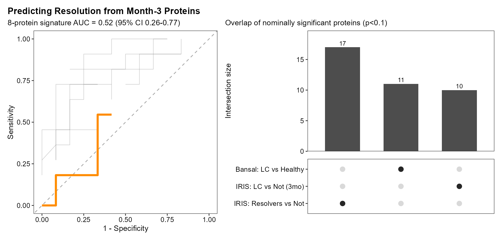
8. Cross-cohort replication scatter (paper Fig 5a)
Per-protein effect sizes computed independently in two cohorts — IRIS (Long COVID vs not, at month 3) and Bansal (Long COVID vs Healthy) — for the proteins the two panels have in common:
m3_eff <- iris[month_num == 3, .(IRIS_number, Assay, NPX, long_covid)]
m3_eff[, z := as.numeric(scale(NPX)), by = Assay]
iris_eff <- m3_eff[, .(iris_effect = mean(z[long_covid == "Yes"], na.rm = TRUE) -
mean(z[long_covid == "No"], na.rm = TRUE)),
by = Assay]
rep_dt <- merge(iris_eff, univ[, .(Assay, estimate)], by = "Assay")
ct <- suppressWarnings(cor.test(rep_dt$iris_effect, rep_dt$estimate, method = "pearson"))
ggplot(rep_dt, aes(x = estimate, y = iris_effect)) +
geom_point(alpha = 0.7, size = 2, colour = "darkorange") +
geom_smooth(method = "lm", colour = "grey20", fill = "grey70", alpha = 0.3, linewidth = 0.8) +
geom_hline(yintercept = 0, linetype = "dashed", colour = "grey70") +
geom_vline(xintercept = 0, linetype = "dashed", colour = "grey70") +
labs(x = "Bansal cohort effect size (Long COVID - Healthy)",
y = "IRIS cohort effect size (Long COVID - Not, z-score)",
title = "Cross-Cohort Replication of Protein Effect Directions",
subtitle = sprintf("%d overlapping proteins; Pearson r = %.2f (p = %.2g)",
nrow(rep_dt), ct$estimate, ct$p.value)) +
theme_olinkviz()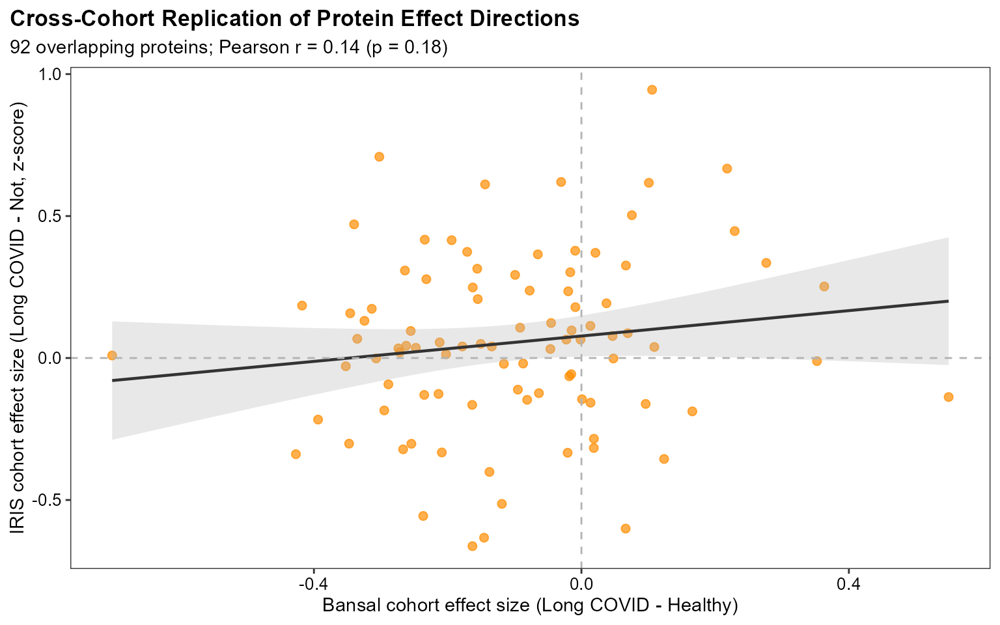
The full script behind this section — with file output and a QA pass
that checks every figure actually rendered — is scripts/generate_figures_natmed.R
in the repo root; the rendered PNGs also appear in the README
gallery.
Next Steps
- See the function reference:
?plot_volcano,?plot_heatmap, etc. - See the
OlinkExperimentcontainer:?OlinkExperiment,?oe_from_long,?npx,?lod,?pcount,?reducedDims - See dataset documentation:
?iris_longcovid,?beatmg_npx, etc. - Run
OlinkViz::run_shiny()for interactive exploration - Visit the OlinkViz GitHub for updates